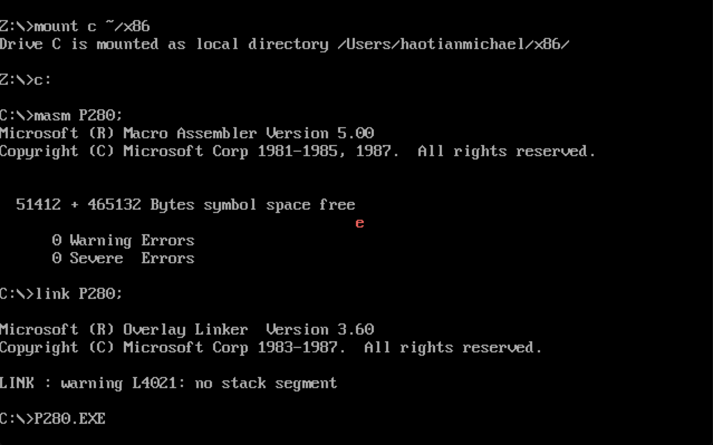

第五部分:中断II
Abstract
CPU实现I/O功能的两个问题:从何处获得外设的输入？如何解决外设输入随时可能发生的问题？首先外设芯片内部有若干寄存器，CPU将这些寄存器当做端口来访问。外设的输入输出不直接送入CPU和内存而是通过这些寄存器。第二，CPU通过外中断控制I/O的随时性。
端口
CPU可以直接读写三个地方的数据:
- 内部寄存器
- 内存单元
- 端口
CPU通过端口地址来定位不同的端口，最多可以定位64KB个端口，则端口地址范围为0~65535。端口的读写指令in和out。只能使用al和ax来存放对端口进行读写的数据。
外中断
外中断是由相关芯片发送给CPU中的。分为可屏蔽中断和不可屏蔽中断。不可屏蔽中断指那些CPU一定需要响应的中断，这种中断很少，中断类型码固定为2。大多数外中断指的是可屏蔽中断。
CPU要不要响应可屏蔽中断完全取决于状态寄存器的IF位。为1则响应，否则不响应。8086中手动设置IF的指令:
sti:设置为1cli:设置为0
实验 编写9号中断例程
PC机键盘的处理过程
键盘中有一个芯片扫描每一个键的状态——按下还是松开。按下产生一个扫描码称为通码，松开也产生一个扫描码称为断码。
断码=通码+80h。扫描码被送到60h端口中。int 9h是BIOS提供的不可屏蔽中断。一旦CPU收到该信号:
- 读出
60h端口的扫描码- 如果是字符键的扫描码，将该扫描码和所对应的字符码送入内存中的BIOS键盘缓存区(16个字单元)。如果是控制键(Ctrl)和切换键(CapsLock)的扫描码，则将其转变为状态字节写进内存中存储状态字节的单元。
- 对键盘系统进行相关的控制。
实验
在屏幕中间依次显示”a”~”z”,在显示的过程中按下Esc键后改变颜色。
实验有意思的地方在于:因为键盘上所有的键都会触发int 9h中断，需要在保证其他键无效的情况下，Esc键触发中断————就相当于出现了两个中断例程，两个中断向量。更有趣的是需要这两个中断同时有效，在一个int 9h中断下！
方法也很简单，就是使用if_else判断扫描码。当然汇编中没有if_else。
中断向量和中断例程
键盘无论是哪一个键当然只会触发
int 9h中断这个不会变。不过得分别写例程:
1 | assume cs:code |
上面的代码主要就是设置了中断向量表。可以看到讲原来的
int 9h中断例程地址保存在ds:0,ds:2地址处，换上新的例程地址cs:(offset int 9)。新的例程代码:
2
3
4
5
6
7
8
9
10
11
12
13
14
15
16
17
18
19
20
21
22
push bx
push es
in al,60h
pushf
call dword ptr ds:[0] ;这里的实际上模拟了int 9中断例程的功能，实现子程序中的调用
cmp al,1
jne int9ret
;下面是Esc例程代码
mov ax,0b800h
mov es,ax
inc byte ptr es:[160*12+40*2+1] ;改变属性值，改变颜色
int9ret:pop es
pop bx
pop ax
iret其中
cmp al,1和jne int9ret就相当于if_else的功能。在主程序中有了栈，栈在中断例程中的主要作用就是保护现场，分析一下:
- 需要保护最开始的
int 9h的中断向量号- 因为在显示字符的主程序中，
ax,es,bx都保存了重要的中间参数，所以需要保护
除此之外,栈并没有起到什么作用。这样看下来其实源程序也简单了不少。
